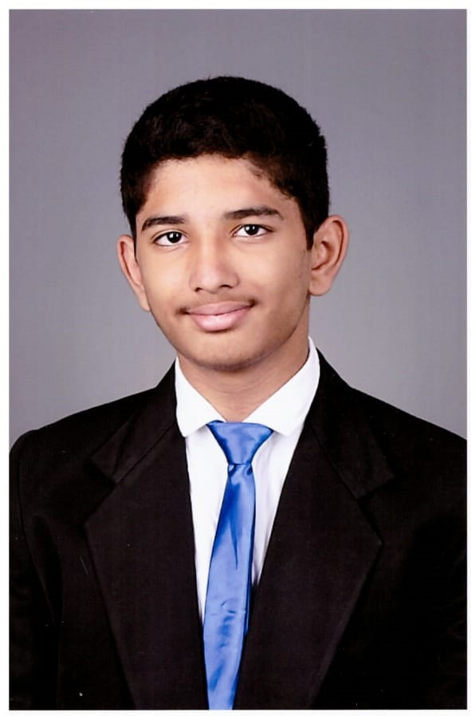

Aum Pauskar here!
Studied in KV2 Belagavi
CSE '25 GIT
I am a driven and creative professional with a passion for solving complex problems and delivering innovative solutions. With a diverse background in IOT, Python, Full Stack web development.... I bring a unique perspective and a wealth of experience to every project I work on. Whether I am developing cutting-edge technology, leading cross-functional teams, or collaborating with clients and partners, I am always striving to push the boundaries of what is possible and make a positive impact in the world. In my free time, I enjoy coding, music and staying active in the programming community.